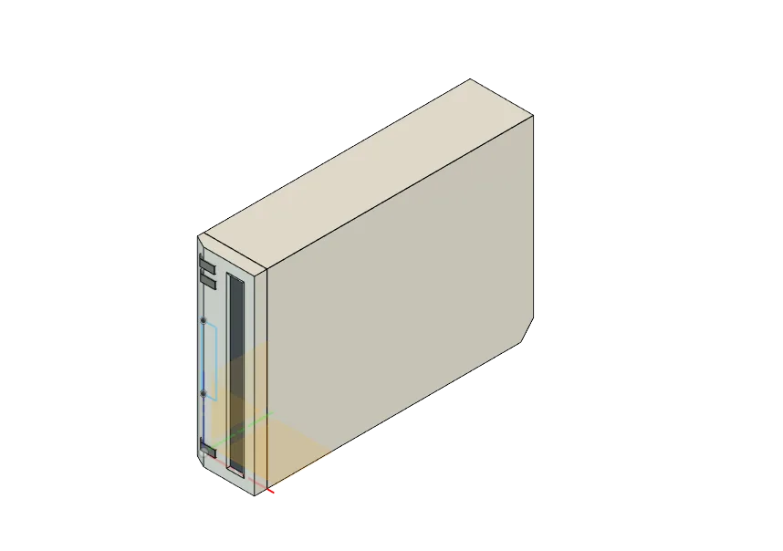
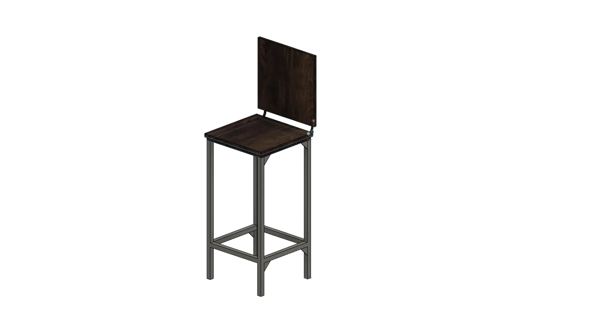
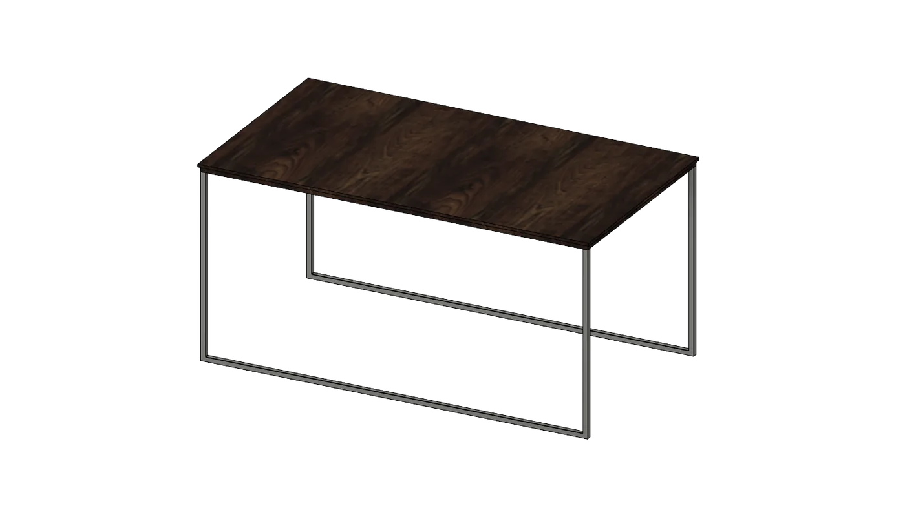
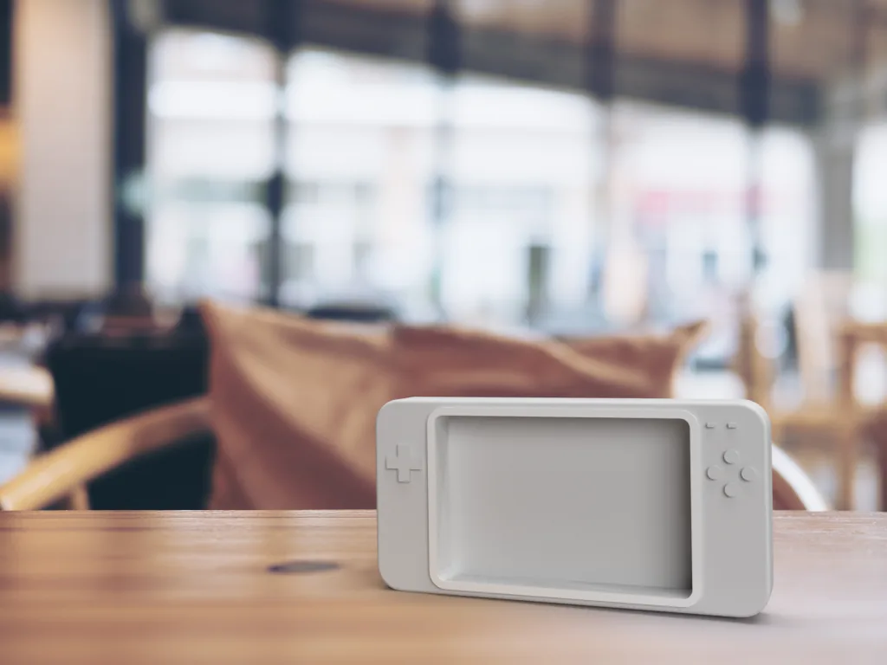

3D · Rendering
3D Modelling & Rendering
Models and renders from CU Boulder’s ATLAS Form class, plus personal experiments in Blender.
Project 1
Nintendo Wii recreation
My first-ever project in Fusion 360. I wanted to challenge myself, so I recreated the Nintendo Wii from memory. It started as a basic rectangle extruded into a box; from there I bevelled the sides to match the subtle curves of the plastic shell, shaped the back to replicate the diagonal cut that fits the console’s stand, and finished with the disc slot and the Eject, Power and Reset buttons.

Project 2
Barstool & coffee table
I measured a real chair and table and modelled them in Fusion 360. The table’s hard corners made it straightforward. The chair took a lot more work: the wooden seat curves slightly at the corners, which needed a bevelling technique, and the backrest is held by a bent iron pipe.


Project 3
Portable Raspberry Pi case
The brief was a 3D model with a real-world use, so I designed a case that holds a Raspberry Pi for portable use. It took more research than you might expect, but the Raspberry Pi team publishes a 3D model of the board, so I could take accurate measurements for the casing.

Project 4
Installation art render
Planned over several weeks, this is a professional rendering of an installation piece inspired by Blade Runner 2049. A walkway of tightly packed wooden planks leads to a large platform surrounded by water. At its center, a grassy square sits beneath four steel formations at different stages of decay, showing the passage of time and opening a conversation about how long our buildings last. In a real-world version, the water would rust the steel over time, giving in to nature rather than resisting it, and the piece stays beautiful at every stage.

Project 5
Wooden cabin
Personal
Blender experiments
Animation, shading and scene studies made in my own time.